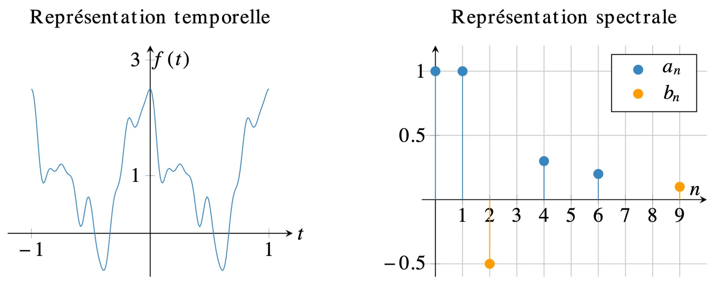
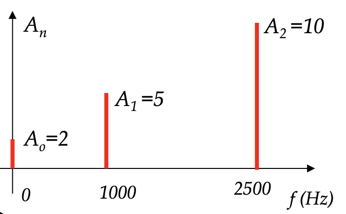
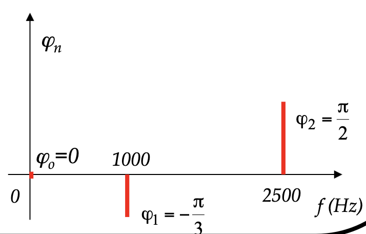

Série de Fourier#
Tout signal \(x(t)\) à temps continu et périodique de période \(T\) peut s’écrire comme une combinaison linéaire de fonctions \(\exp\left(j 2\pi k f_{0} t\right)\), qui sont elles-mêmes périodiques de période \(T\) :
où \(k \in \mathbb{Z}\) est la « fréquence » et \(X[k]\) sont des coefficients. L’ensemble de ces coefficients, noté simplement \(X\), est la série de Fourier de \(x\) ; c’est aussi un signal. On montre que les coefficients de la série de Fourier sont définis par :
Le terme \(k\) est appelé la \(k\)e harmonique. En particulier, le terme \(X[1]\) est la première harmonique, que l’on appelle aussi la « composante fondamentale » ou simplement fondamentale. Le terme \(X[0]\) correspond à la moyenne du signal :
Formulation alternative : Forme trigonométrique réelle
Parfois, la série de Fourier de signaux réels est définie comme l’ensemble des coefficients \(a_k\) et \(b_k\) tels que :
La relation entre ces coefficients \(a_k\) et \(b_k\) avec l’expression précédente de la série de Fourier est :
et la formule de la série de Fourier inverse devient :
Dans le cadre de ce module, nous n’utiliserons pas les formules faisant intervenir \(a_k\) et \(b_k\) car elles obligent à effectuer deux fois plus de calculs qu’avec les formules précédentes utilisant \(X[k]\). En effet, la formulation avec l’exponentielle complexe regroupe les termes en cosinus et en sinus. C’est donc plus simple en complexe ! 😜
La représentation du spectre devient :

Ce qui n’est pas spécialement aisé à interpréter. Ce qui explique que nous n’utiliserons pas souvent cette forme.
Vous pouvez tester cette représentation : https://www.falstad.com/fourier/
Formulation alternative : Forme polaire
Il existe une 3e formulation : la forme polaire. La forme polaire de la série de Fourier permet d’obtenir directement l’amplitude et la phase des harmoniques.
où


Vous pouvez tester par vous même cette représentation : https://phet.colorado.edu/sims/html/fourier-making-waves/latest/fourier-making-waves_all.html
Reconstruction
Une fonction périodique est complètement définie par ses coefficients de Fourier et sa période :
Si on connaît \(X[k]\) et \(\omega_0\), on peut construire \(x(𝑡)\) en travaillant avec la forme complexe.
Si on connaît \(𝑎_𝑣\), \(𝑎_𝑛\), \(𝑏_𝑛\) et \(\omega_0\), on peut construire \(x(𝑡)\) en travaillant avec la forme trigonométrique réelle.
Si on connaît l’amplitude \(𝐴_𝑛\) et la phase \(\theta_𝑛\), on peut construire \(x(𝑡)\) en travaillant avec la forme polaire.
Série de Fourier discrète#
De même que pour la série de Fourier, un signal à temps discret et périodique de période \(N\) peut s’écrire comme la combinaison linéaire de fonctions \(\exp\left(j\frac{2\pi k n}{N}\right)\), qui sont également périodiques de période \(N\) :
et :
Remarque Un signal \(x[n]\) à durée limité (donc non défini en dehors de l’intervalle \(\{0,\dots,N-1\}\))
peut être vu comme un signal périodique de période \(N\).
Il possède donc une série de Fourier discrète qui s’appelle dans ce cas « transformée de Fourier discrète » (TFD).
Comme les signaux que l’on traite sur ordinateur sont toujours à durée limitée,
alors ce sera cette transformée de Fourier discrète qui sera calculée.
Il existe un algorithme très rapide pour la calculer : l’algorithme FFT
(implémenté en Python par exemple dans la fonction numpy.fft.fft).
Valeur RMS#
La valeur RMS d’un signal peut être calculée à partir de la série de Fourier. On remplace la fonction \(𝑓(𝑡)\) par sa série de Fourier :
{kind=link}
Par contre, il est généralement plus simple de calculer la valeur RMS à partir de la fonction, plutôt que la série de Fourier.
Phénomène de Gibbs#
Le phénomène de Gibbs est l’apparition d’oscillations au abords des discontinuités d’un signal, lorsque celui-ci est reconstruit à partir des coefficients de sa série de Fourier. On comprend que si la reconstruction n’utilise qu’une partie des coefficients de la série de Fourier, alors le signal reconstruit sera différent du signal original. Lorsque le nombre de coefficients augmente, la reconstruction se rapproche du signal, sauf au discontinuités où il se produit des oscillations qui ne peuvent s’atténuer.
import numpy as np
import matplotlib as mpl
import matplotlib.pyplot as plt
# Phénomène de Gibbs
N = 500
n = np.arange(N)
# Signal de base
x = np.where(n<N/2, 1, 0)
# FFT
X = np.fft.fft(x)
# Nombre de coefficients de la FFT à conserver (de -K à K)
K = [5, 20, 100]
fig = plt.figure(figsize=(15,3))
for i, k in enumerate(K):
# Annulation des coefficients de la FFT
Y = X.copy()
Y[k+1:N-k] = 0
# Reconstruction
y = np.fft.ifft(Y)
y = np.real(y)
# Affichage
plt.subplot(1, len(K), i+1)
plt.plot(n, x, "-", color="tab:green", linewidth=1)
plt.plot(n, y)
plt.ylim([-.2, 1.2])
plt.title(f"Reconstruction avec {k} coefficients")
plt.savefig("gibbs.svg")
Reconstruction d’un créneau à partir de quelques coefficients de sa série de Fourier discrète.
Exemple : Analyse spectrale du son d’un didjeridu#
Le son d’un didjeridu est périodique. Son spectre est donc un spectre de raies pour lequel nous pouvons constater que :
la fondamental est à 65 Hz (toujours la fréquence la plus petite)
le signal ne contient pas d’harmoniques pairs (attention que les harmoniques sont à un multiple entier de la fréquence de la fondamental)
l’harmonique 3 a une amplitude supérieure au fondamental (la fondamental n’a pas nécessairement la plus grande amplitude)
{kind=link}
{kind=link}
Spectres signaux usuels#
{kind=link}
Application : Mesure de la distorsion harmonique (ou de la linéarité)#
Cette mesure, couramment utilisée en électronique et en électrotechnique, nous renseigne sur :
la qualité d’un oscillateur sinusoïdal (par analyse spectrale du signal produit par le dispositif)
la linéarité d’un amplificateur (analyse spectrale de la sortie si l’entrée est sinusoïdale)
la linéarité d’une charge alimentée par le réseau (analyse spectrale du courant si la tension est sinusoïdale)
Par exemple :
on applique sur l’entrée un signal à 1 kHz de niveau 1V
le spectre en sortie montre l’apparition d’harmoniques
ces harmoniques sont dans la bande audio et donc peuvent être audibles
{kind=link}
Dans cette exemple, l’amplitude des harmoniques de rangs supérieurs à la fondamental sont très faibles. Ce qui caractérise un bon ampli audio (on dit que cet ampli a une bonne linéarité). Dans d’autre domaine (ex : application de transmission hautes fréquences), cette linéarité pourrait ne pas être suffisante.
Nous pouvons définir le taux de distorsion harmonique :
où \(H_x\) est l’amplitude de l’harmonique x et \(F\) est la fréquence de la fondamental.
Transmission d’un signal numérique#
Dans les systèmes électroniques actuels, les signaux analogiques côtoient souvent les signaux numérique :
les signaux numériques sont à fréquence élevée et à fronts raides, et leur spectre est donc très large
les harmoniques de rang élevé sont facilement rayonnés car les pistes de circuit imprimé peuvent constituer de bonnes antennes
cela se produit chaque fois que la longueur de la piste est voisine du quart de la longueur d’onde
par exemple une piste de 10 cm constitue une excellente antenne pour l’harmonique 40 d’un signal à 10 MHz
Les constructeurs de circuits intégrés prennent actuellement en compte ce problème et proposent des circuits intégrés qui dégradent volontairement les fronts des signaux pour limiter l’amplitude des harmoniques de rang élevé.
{kind=link}
Nous verrons cela plus en détail dans le cours de modulation.